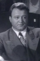

Country:United States, 81 minutes
Spoken languages:English
Genres:Crime
Director(s):Fred F. Sears
Writer(s):Bernard Gordon
Video Codec:Unknown
Number: 2524


Certification:NR
Storyline:
Desmond plays convict Mike Gilbert, who goes on the lam with fellow prisoners Gruber and Graham when he finds out his wife is divorcing him and feels he has nothing to lose. Gruber intends to get his robbery loot, which his father, Curly, has successfully hidden from the law. After commandeering a plane, they double-cross Graham, who assembles his gang to get revenge - and Gruber's loot. Meanwhile, Gilbert falls in love with Robbie, his ex-wife’s sister. Through Robbie’s influence, Gilbert decides to go straight, but his cohorts aren’t quite so willing to reform.
Cast: 

Medium: Original DVD,
Comments: Part of: Tales From The Prison Yard - 6 Film Collection
Loaned: No
Aspect ratio: Unknown